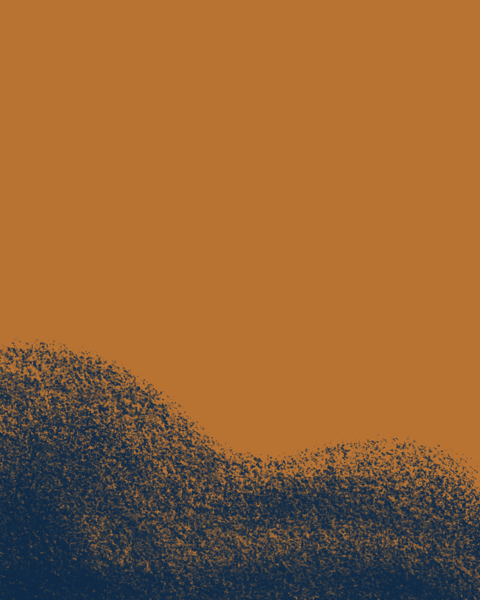

Problème ressenti
Au contre-jour, l'écran s'éteint, les couleurs se ferment, le sujet décroche. Le geste manque, la mesure aussi.
Trois ajustements simples, et la lumière redevient lisible, sans matériel supplémentaire.


@pierrediquelouphotographie